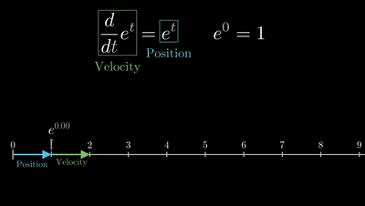
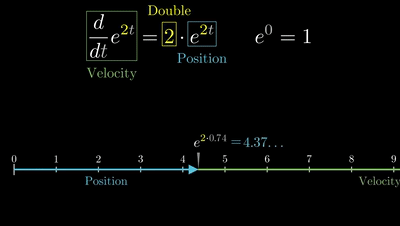
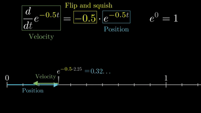
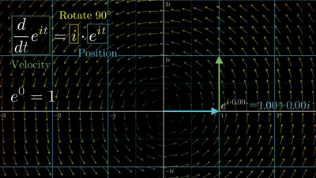
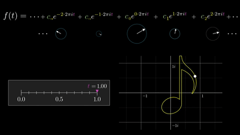
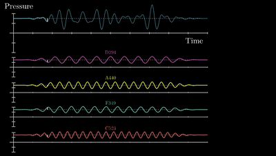
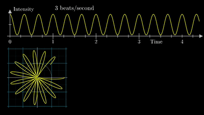
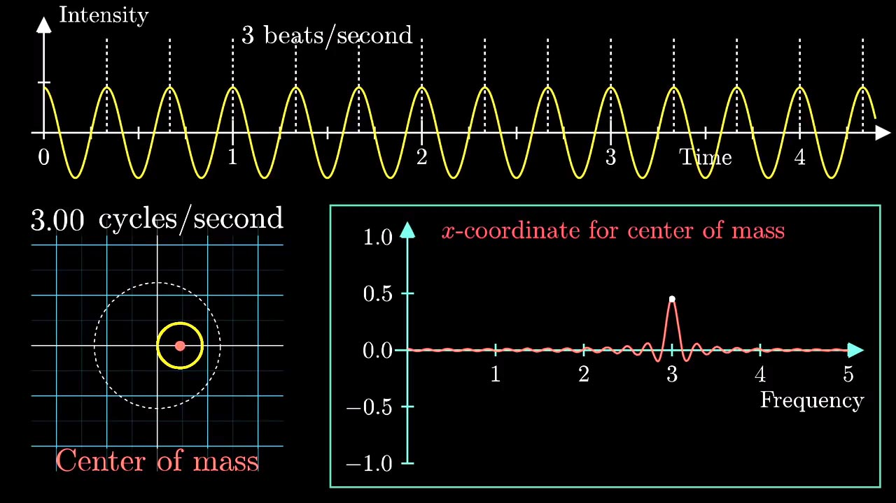
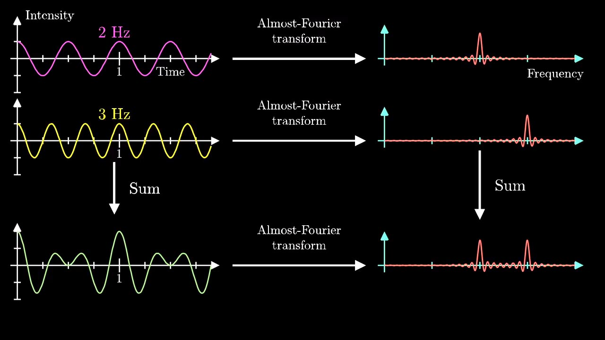

- dtdet=et
将t看作时间，et看作质点的速度，et看作质点的位置。此时速度与位置符号相同。

- dtde2t=2⋅e2t

- dtde−0.5t=−0.5⋅e−0.5t
此时速度与位置方向相反。质点随时间趋于原点。

- dtdeit=i⋅eit
在复平面中，速度与位置方向垂直。质点不断旋转。

得到欧拉公式：
eix=cosx+isinx
当 x=π 时：
eiπ+1=0
傅里叶级数 Fouriter Series
任何周期函数都可以用正弦函数和余弦函数构成的无穷级数来表示（选择正弦函数与余弦函数作为基函数是因为它们是正交的）
sN(x)=2A0+n=1∑NAn⋅cos(P2πnx−φn)
sN(x)=n=−N∑Ncn⋅eiP2πnx
如果把一副二维矢量图(svg)看作是一个复平面的函数sN(x)，则这个函数可以用多个旋转的圆cn⋅eiP2πnx复合来表示。（不知道咋表达orz）cn是一个复数，表示这个圆的初始状态（半径，方向）。n表示这个圆的旋转速率。

傅里叶变换 FT
傅里叶变换 （FT） 是一种数学变换，它将函数分解为频率分量，频率分量由变换的输出表示为频率的函数。最常见的时间或空间函数被转换，这将分别根据时间频率或空间频率输出函数。（将信号的时域转换为频域）。
可以将一个周期函数分解成多个正/余弦函数。

将一个周期函数绕成一个圈，观察这个圈在不同频率下的质心位置。

这个质心位置在某频率表现特殊。

在多个混合的周期函数中，这个现象也成立。

我们把这个绕圈操作视作在复平面下逆时针旋转。根据欧拉公式就是将原函数g(t)后乘以e−2πift。就把时域t转换成了频域f。
g^(f)=∫t1t2g(t)e−2πiftdt
如果把一个非周期的函数视作是一个周期无限大的函数：
g^(f)=∫−∞+∞g(t)e−2πiftdt
逆傅里叶变换 IFT
将旋转后的函数再顺时针旋转回来，就是g^(f)后乘以e2πift：就把频域f转换成了时域t。
g(t)=∫−∞+∞g^(f)e2πiftdf
快速傅里叶变换 FFT
它能够将计算DFT（离散傅里叶变换）的复杂度从只用DFT定义计算需要的O(n2)，降低到O(nlogn)，其中n为数据大小。